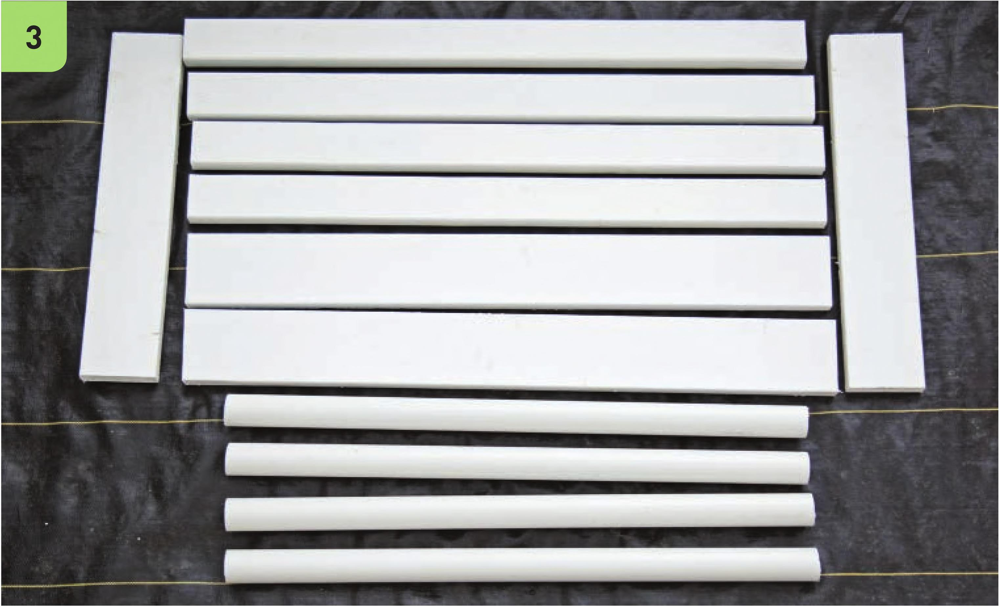

TOOLS Paint roller and/or paintbrush Circular saw Deburring tool Drill Hacksaw Step drill bit with Vs" increments from VC to 1 W Tape measure Permanent marker 2W hole saw drill bit Rafter square (also called a speed square) Level Drill bit matching screws Sawhorses with clamps 2" hole saw drill bit Irrigation line hole punch Heavy-duty scissors Safety Equipment Work gloves Eye protection Lumber and PVC Preparation Most stores that sell lumber offer to cut the lumber to specific dimensions if requested. Some home improvement stores will cut PVC too. Request the dimensions listed in the steps below to skip the work of cutting the lumber and/or PVC to reduce the amount of labor and tools required. 1 Wearing work gloves and eye protection, cut the two 2 x 6" x 8' boards into the following lengths: • One board into two 4' segments • One board into two 2'63A'‘ segments 2 Cut the two 2 x 4" x 8' boards into four 4' segments. Final lengths and quantities of cut lumber: 2 2 x 6" x 4' boards 2 2 x 6" x 2'63A'' boards 4 2 x 4" x 4' boards 3 Paint the lumber before assembly. 4 Cut the 2" PVC to make the following lengths. Clean the edges of the cuts with a deburring tool. 4 37" segments 3 2V4" segments 1 4" segment 1 3" segment 3/C grommets HYDROPONIC GROWING SYSTEMS 73
